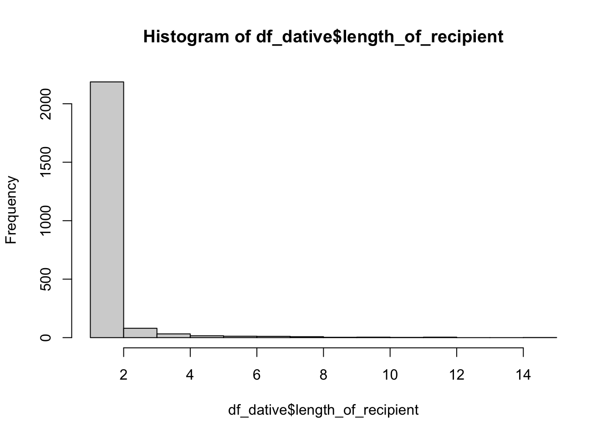

pacman::p_load(
languageR,
lme4,
dplyr,
tidyr,
janitor,
broom.mixed,
ggeffects
)ggeffects Package
regression
predictions
reproducibility
How to generate model predictions
When reporting our models, it can be helpful for our audience (and ourselves) to produce model predicted values per condition/values of a continuous predictor. Using the equation of a line, we can manually generate such predictions as long as we know:
- our intercept estimate
- our predictor estimate(s)
- our coding scheme for categorical predictors
- how transformations translate to raw values of continuous predictors
There are also useful packages that automate this process for us, which can be especially useful with more complex models such as mixed effects models.
We’ll see here how to manually compute the fitted values per condition, and how these compare to functions from the ggeffects package.
Manually calculating predictions
We have to start by fitting a model. Let’s use
Load the dative dataset.
df_dative <- dative |>
clean_names()summary(df_dative) speaker modality verb semantic_class
S1104 : 40 spoken :2360 give :1666 a:1433
S1083 : 30 written: 903 pay : 207 c: 405
S1151 : 30 sell : 206 f: 59
S1139 : 29 send : 172 p: 228
S1019 : 28 cost : 169 t:1138
(Other):2203 tell : 128
NA's : 903 (Other): 715
length_of_recipient animacy_of_rec defin_of_rec pronom_of_rec
Min. : 1.000 animate :3024 definite :2775 nonpronominal:1229
1st Qu.: 1.000 inanimate: 239 indefinite: 488 pronominal :2034
Median : 1.000
Mean : 1.842
3rd Qu.: 2.000
Max. :31.000
length_of_theme animacy_of_theme defin_of_theme pronom_of_theme
Min. : 1.000 animate : 74 definite : 929 nonpronominal:2842
1st Qu.: 2.000 inanimate:3189 indefinite:2334 pronominal : 421
Median : 3.000
Mean : 4.272
3rd Qu.: 5.000
Max. :46.000
realization_of_recipient access_of_rec access_of_theme
NP:2414 accessible: 615 accessible:1742
PP: 849 given :2302 given : 502
new : 346 new :1019
First off, we see there are 903 observations (out of 3263) where speaker information is not provided. For simplicity’s sake, let’s remove these observations. We’ll use the drop_na() function from tidyr.
df_dative <- df_dative |>
drop_na(speaker)Now let’s take a peak.
head(df_dative) speaker modality verb semantic_class length_of_recipient animacy_of_rec
903 S1176 spoken give a 1 inanimate
904 S1110 spoken give c 2 animate
905 S1110 spoken pay a 1 animate
906 S1146 spoken give a 2 animate
907 S1146 spoken give t 2 animate
908 S1053 spoken give t 1 animate
defin_of_rec pronom_of_rec length_of_theme animacy_of_theme defin_of_theme
903 definite pronominal 2 inanimate indefinite
904 indefinite nonpronominal 1 inanimate definite
905 definite pronominal 1 inanimate indefinite
906 definite nonpronominal 4 inanimate indefinite
907 definite nonpronominal 3 inanimate definite
908 definite pronominal 2 inanimate definite
pronom_of_theme realization_of_recipient access_of_rec access_of_theme
903 nonpronominal NP given accessible
904 pronominal PP new given
905 nonpronominal PP given accessible
906 nonpronominal NP accessible new
907 nonpronominal PP accessible accessible
908 pronominal PP given givencontrasts(df_dative$semantic_class) c f p t
a 0 0 0 0
c 1 0 0 0
f 0 1 0 0
p 0 0 1 0
t 0 0 0 1class(df_dative$semantic_class)[1] "factor"levels(df_dative$modality)[1] "spoken" "written"Fit model
glmer_dative <-
glmer(
realization_of_recipient ~ semantic_class + length_of_recipient +
(1 | verb),
# control = glmerControl(optimizer = "optimx", optCtrl = list(method = "nlminb")),
data = df_dative,
family = "binomial"
)summary(glmer_dative)Generalized linear mixed model fit by maximum likelihood (Laplace
Approximation) [glmerMod]
Family: binomial ( logit )
Formula: realization_of_recipient ~ semantic_class + length_of_recipient +
(1 | verb)
Data: df_dative
AIC BIC logLik deviance df.resid
1710.4 1750.7 -848.2 1696.4 2353
Scaled residuals:
Min 1Q Median 3Q Max
-33.155 -0.443 -0.272 -0.042 5.764
Random effects:
Groups Name Variance Std.Dev.
verb (Intercept) 1.715 1.31
Number of obs: 2360, groups: verb, 38
Fixed effects:
Estimate Std. Error z value Pr(>|z|)
(Intercept) -3.05370 0.35904 -8.505 <2e-16 ***
semantic_classc 0.07234 0.31981 0.226 0.8210
semantic_classf 0.53767 0.66759 0.805 0.4206
semantic_classp -3.68208 1.43821 -2.560 0.0105 *
semantic_classt 0.97386 0.16237 5.998 2e-09 ***
length_of_recipient 0.98917 0.08216 12.039 <2e-16 ***
---
Signif. codes: 0 '***' 0.001 '**' 0.01 '*' 0.05 '.' 0.1 ' ' 1
Correlation of Fixed Effects:
(Intr) smntc_clssc smntc_clssf smntc_clssp smntc_clsst
smntc_clssc -0.307
smntc_clssf -0.280 0.098
smntc_clssp -0.185 0.055 0.050
smntc_clsst -0.253 0.261 0.054 0.070
lngth_f_rcp -0.391 0.077 0.021 0.011 0.085 Calculate predictions
First, remind ourselves of our contrasts
contrasts(df_dative$semantic_class) c f p t
a 0 0 0 0
c 1 0 0 0
f 0 1 0 0
p 0 0 1 0
t 0 0 0 1Grab our estimates.
tidy(glmer_dative)# A tibble: 7 × 7
effect group term estimate std.error statistic p.value
<chr> <chr> <chr> <dbl> <dbl> <dbl> <dbl>
1 fixed <NA> (Intercept) -3.05 0.359 -8.51 1.81e-17
2 fixed <NA> semantic_classc 0.0723 0.320 0.226 8.21e- 1
3 fixed <NA> semantic_classf 0.538 0.668 0.805 4.21e- 1
4 fixed <NA> semantic_classp -3.68 1.44 -2.56 1.05e- 2
5 fixed <NA> semantic_classt 0.974 0.162 6.00 2.00e- 9
6 fixed <NA> length_of_recipient 0.989 0.0822 12.0 2.22e-33
7 ran_pars verb sd__(Intercept) 1.31 NA NA NA Save them as objects to make things a little more transparent.
intercept <-
tidy(glmer_dative) |>
filter(term == "(Intercept)") |>
pull(estimate)
sem_class_a_c <-
tidy(glmer_dative) |>
filter(term == "semantic_classc") |>
pull(estimate)
sem_class_a_f <-
tidy(glmer_dative) |>
filter(term == "semantic_classf") |>
pull(estimate)
sem_class_a_p <-
tidy(glmer_dative) |>
filter(term == "semantic_classp") |>
pull(estimate)
sem_class_a_t <-
tidy(glmer_dative) |>
filter(term == "semantic_classt") |>
pull(estimate)
length_recip <-
tidy(glmer_dative) |>
filter(term == "length_of_recipient") |>
pull(estimate)Now we can manually calculate:
a <- plogis(intercept + sem_class_a_c*0 + length_recip*1)c <- plogis(intercept + sem_class_a_c*1 + length_recip*1)f <- plogis(intercept + sem_class_a_f*1 + length_recip*1)p <- plogis(intercept + sem_class_a_p*1 + length_recip*1)t <- plogis(intercept + sem_class_a_t*1 + length_recip*1)a[1] 0.1125924c[1] 0.1200255f[1] 0.1784539p[1] 0.003183409t[1] 0.2514916ggeffects::ggpredict(glmer_dative, terms = "semantic_class")# Predicted probabilities of realization_of_recipient
semantic_class | Predicted | 95% CI
---------------------------------------
a | 0.11 | 0.06, 0.19
c | 0.12 | 0.06, 0.22
f | 0.18 | 0.06, 0.43
p | 0.00 | 0.00, 0.05
t | 0.25 | 0.16, 0.38
Adjusted for:
* length_of_recipient = 1.00
* verb = 0 (population-level)This matches our manual calculations.
ggeffects::ggeffect(glmer_dative, terms = "semantic_class")# Predicted probabilities of realization_of_recipient
semantic_class | Predicted | 95% CI
---------------------------------------
a | 0.16 | 0.09, 0.26
c | 0.17 | 0.09, 0.30
f | 0.24 | 0.08, 0.53
p | 0.00 | 0.00, 0.07
t | 0.33 | 0.20, 0.49This doesn’t…why is that?
ggeffects::ggemmeans(glmer_dative, terms = "semantic_class")# Predicted probabilities of realization_of_recipient
semantic_class | Predicted | 95% CI
---------------------------------------
a | 0.11 | 0.06, 0.20
c | 0.12 | 0.06, 0.22
f | 0.18 | 0.06, 0.44
p | 0.00 | 0.00, 0.05
t | 0.25 | 0.15, 0.39
Adjusted for:
* length_of_recipient = 1.00This also matches our predictions.
Effect of transformations: contrasts and standardizing
Centre predictors
contrasts(df_dative$semantic_class) c f p t
a 0 0 0 0
c 1 0 0 0
f 0 1 0 0
p 0 0 1 0
t 0 0 0 1contrasts(df_dative$semantic_class) <- contr.sum(5)/2
contrasts(df_dative$semantic_class) [,1] [,2] [,3] [,4]
a 0.5 0.0 0.0 0.0
c 0.0 0.5 0.0 0.0
f 0.0 0.0 0.5 0.0
p 0.0 0.0 0.0 0.5
t -0.5 -0.5 -0.5 -0.5summary(df_dative$length_of_recipient) Min. 1st Qu. Median Mean 3rd Qu. Max.
1.000 1.000 1.000 1.386 1.000 15.000 hist(df_dative$length_of_recipient)
df_dative <-
df_dative |>
mutate(length_of_recipient_z = scale(df_dative$length_of_recipient))df_dative |>
select(length_of_recipient, length_of_recipient_z) |>
head() length_of_recipient length_of_recipient_z
903 1 -0.3283482
904 2 0.5213247
905 1 -0.3283482
906 2 0.5213247
907 2 0.5213247
908 1 -0.3283482Fit model
glmer_dative_c <-
glmer(
realization_of_recipient ~ semantic_class + length_of_recipient +
(1 | verb),
# control = glmerControl(optimizer = "optimx", optCtrl = list(method = "nlminb")),
data = df_dative,
family = "binomial"
)summary(glmer_dative_c)Generalized linear mixed model fit by maximum likelihood (Laplace
Approximation) [glmerMod]
Family: binomial ( logit )
Formula: realization_of_recipient ~ semantic_class + length_of_recipient +
(1 | verb)
Data: df_dative
AIC BIC logLik deviance df.resid
1710.4 1750.7 -848.2 1696.4 2353
Scaled residuals:
Min 1Q Median 3Q Max
-33.155 -0.443 -0.272 -0.042 5.764
Random effects:
Groups Name Variance Std.Dev.
verb (Intercept) 1.715 1.31
Number of obs: 2360, groups: verb, 38
Fixed effects:
Estimate Std. Error z value Pr(>|z|)
(Intercept) -3.47333 0.39977 -8.688 < 2e-16 ***
semantic_class1 0.83925 0.68060 1.233 0.21754
semantic_class2 0.98392 0.78282 1.257 0.20880
semantic_class3 1.91463 1.18820 1.611 0.10710
semantic_class4 -6.52475 2.29360 -2.845 0.00444 **
length_of_recipient 0.98917 0.08216 12.039 < 2e-16 ***
---
Signif. codes: 0 '***' 0.001 '**' 0.01 '*' 0.05 '.' 0.1 ' ' 1
Correlation of Fixed Effects:
(Intr) smnt_1 smnt_2 smnt_3 smnt_4
smntc_clss1 -0.539
smntc_clss2 -0.486 0.626
smntc_clss3 -0.152 0.057 0.000
smntc_clss4 0.570 -0.805 -0.715 -0.543
lngth_f_rcp -0.317 -0.040 0.028 0.001 0.002tidy(glmer_dative_c)# A tibble: 7 × 7
effect group term estimate std.error statistic p.value
<chr> <chr> <chr> <dbl> <dbl> <dbl> <dbl>
1 fixed <NA> (Intercept) -3.47 0.400 -8.69 3.68e-18
2 fixed <NA> semantic_class1 0.839 0.681 1.23 2.18e- 1
3 fixed <NA> semantic_class2 0.984 0.783 1.26 2.09e- 1
4 fixed <NA> semantic_class3 1.91 1.19 1.61 1.07e- 1
5 fixed <NA> semantic_class4 -6.52 2.29 -2.84 4.44e- 3
6 fixed <NA> length_of_recipient 0.989 0.0822 12.0 2.21e-33
7 ran_pars verb sd__(Intercept) 1.31 NA NA NA Our estimates have changed.
Let’s first take a look at the predictions computed by the ggeffects package.
ggpredict(glmer_dative_c, term = "semantic_class")# Predicted probabilities of realization_of_recipient
semantic_class | Predicted | 95% CI
---------------------------------------
a | 0.11 | 0.06, 0.19
c | 0.12 | 0.06, 0.22
f | 0.18 | 0.06, 0.43
p | 0.00 | 0.00, 0.05
t | 0.25 | 0.16, 0.38
Adjusted for:
* length_of_recipient = 1.00
* verb = 0 (population-level)These are the same as before.
ggeffect(glmer_dative_c, term = "semantic_class")# Predicted probabilities of realization_of_recipient
semantic_class | Predicted | 95% CI
---------------------------------------
a | 0.16 | 0.09, 0.26
c | 0.17 | 0.09, 0.30
f | 0.24 | 0.08, 0.53
p | 0.00 | 0.00, 0.07
t | 0.33 | 0.20, 0.49These are also the same as before.
ggemmeans(glmer_dative_c, term = "semantic_class")# Predicted probabilities of realization_of_recipient
semantic_class | Predicted | 95% CI
---------------------------------------
a | 0.11 | 0.06, 0.20
c | 0.12 | 0.06, 0.22
f | 0.18 | 0.06, 0.44
p | 0.00 | 0.00, 0.05
t | 0.25 | 0.15, 0.39
Adjusted for:
* length_of_recipient = 1.00These are again the same as before, and match those computed by ggpredict().
So what’s going on here? To understand it better, let’s first repeat the manual calculations using the model estimates.
Manual predictions
First, remind ourselves of our contrasts
contrasts(df_dative$semantic_class) [,1] [,2] [,3] [,4]
a 0.5 0.0 0.0 0.0
c 0.0 0.5 0.0 0.0
f 0.0 0.0 0.5 0.0
p 0.0 0.0 0.0 0.5
t -0.5 -0.5 -0.5 -0.5Grab our estimates.
tidy(glmer_dative_c)# A tibble: 7 × 7
effect group term estimate std.error statistic p.value
<chr> <chr> <chr> <dbl> <dbl> <dbl> <dbl>
1 fixed <NA> (Intercept) -3.47 0.400 -8.69 3.68e-18
2 fixed <NA> semantic_class1 0.839 0.681 1.23 2.18e- 1
3 fixed <NA> semantic_class2 0.984 0.783 1.26 2.09e- 1
4 fixed <NA> semantic_class3 1.91 1.19 1.61 1.07e- 1
5 fixed <NA> semantic_class4 -6.52 2.29 -2.84 4.44e- 3
6 fixed <NA> length_of_recipient 0.989 0.0822 12.0 2.21e-33
7 ran_pars verb sd__(Intercept) 1.31 NA NA NA Save them as objects to make things a little more transparent.
intercept <-
tidy(glmer_dative_c) |>
filter(term == "(Intercept)") |>
pull(estimate)
sem_class_t_a <-
tidy(glmer_dative_c) |>
filter(term == "semantic_class1") |>
pull(estimate)
sem_class_t_c <-
tidy(glmer_dative_c) |>
filter(term == "semantic_class2") |>
pull(estimate)
sem_class_t_f <-
tidy(glmer_dative_c) |>
filter(term == "semantic_class3") |>
pull(estimate)
sem_class_t_p <-
tidy(glmer_dative_c) |>
filter(term == "semantic_class4") |>
pull(estimate)
length_recip <-
tidy(glmer_dative_c) |>
filter(term == "length_of_recipient") |>
pull(estimate)Now we can manually calculate:
# t <-
plogis(intercept + sem_class_t_a*(-0.5))[1] 0.01997777plogis(intercept + sem_class_t_p*(-0.5))[1] 0.4474558plogis(intercept + sem_class_t_f*(-0.5))[1] 0.01176666plogis(intercept + sem_class_t_c*(-0.5))[1] 0.01860966summary(df_dative$semantic_class) a c f p t
907 371 47 183 852 a <- plogis(intercept + sem_class_t_a*(+0.5) + length_recip*0)f <- plogis(intercept + sem_class_t_f*(+0.5) + length_recip*0)p <- plogis(intercept + sem_class_t_p*(+0.5) + length_recip*0)c <- plogis(intercept + sem_class_t_c*(+0.5) + length_recip*0)a[1] 0.04505766c[1] 0.04827448f[1] 0.07474313p[1] 0.001186326t[1] 0.2514916